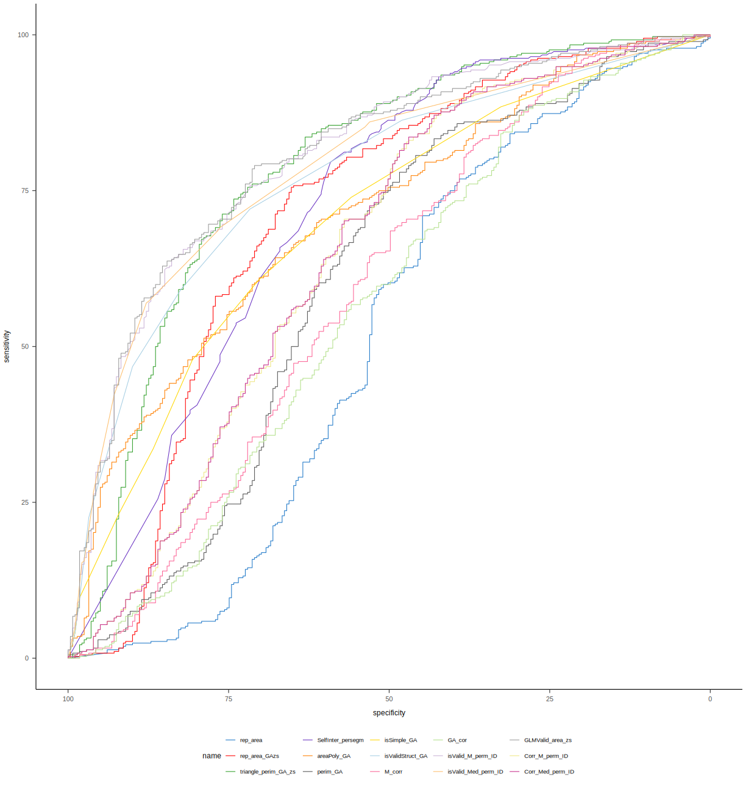
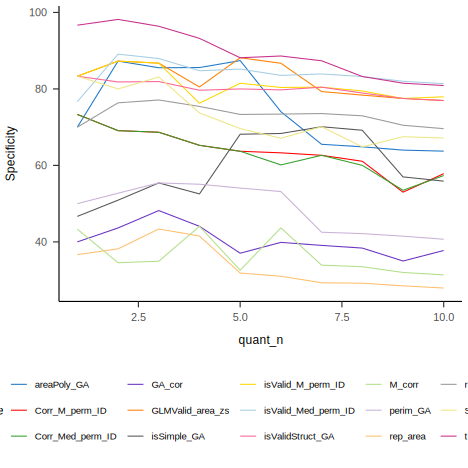

| dataSource | Ctl | Syn |
|---|---|---|
| PeterCor | 21 | 13 |
| Rothen | 37 | 22 |
| Ward | 204 | 249 |
| Ward2 | 17 | 88 |
Pre-registered report: Space Sequence Synesthesia Diagnostic using form mapping
Rémy Lachelin, Chhavi Sachadva, and Nicolas Rothen
Psychology, Uni Distance Suisse
Author Note
Rémy Lachelin  https://orcid.org/0000-0000-0000-0000
https://orcid.org/0000-0000-0000-0000
Chhavi Sachadva  https://orcid.org/0000-0000-0000-0000
https://orcid.org/0000-0000-0000-0000
Nicolas Rothen  https://orcid.org/0000-0000-0000-0000
https://orcid.org/0000-0000-0000-0000
Correspondence concerning this article should be addressed to Rémy Lachelin, Psychology, Uni Distance Suisse, Brig road, Brig, Valais 0, Email: remy.lachelin@fernuni.ch
Abstract
This is my abstract.
Keywords: Space sequence synesthesia, consistency
Pre-registered report: Space Sequence Synesthesia Diagnostic using form mapping
Abstract:
Sequence space synesthesia is the phenomenon of representing ordered visual symbols in particular spatial positions. Not everyone has space sequence synesthesia. Existent tools to detect space sequence synesthesia are based on self-reports (i.e. questionnaire) and response consistency. Consistency can be derived on the stimulus level, i.e. spatial deviation in time, or on the form level, i.e. geometrical properties. In this pre-registered report, available data from 666 participants is used to explore new tools to discriminate syntheses from controls. Conceptually, the novel criteria aim at taking advantage of the inducer’s ordinality that create synesthetic forms. For this aim, we harness a geography package to extract geometrical features to use as a test for synesthesia. Reciever Operator Characteristics are used to select the features that best classify the groups. In a second phase, we will test the predictive power of the new diagnostic features on an additional dataset that has yet to be collected.
Introduction
Sequence Space Synesthesia (SSS) or visuospatial forms is the phenomenon where ordered sequences trigger associations in specific spatial positions. For example, numbers, weekdays or months (synesthetic inducers) are represented as arranged into specific spatial positions or forms (synesthetic concurrent).
The spatial representation of the concurrent can be on a peripersonal space around the body (i.e. projector) or internal (i.e. associator) (Dixon et al., 2004).
(Brang et al., 2010) evaluated consistent responses when the distance between same stimuli (i.e. January and January) was within 1.96 z-scores compared to the adjacent stimuli (i.e. February). This criteria might however be to conservatory since it detected synesthesia in 4 of 81 self-reported synesthetes.
Different questionnaires and tests have been developed to pull apart people with SSS and without. On one side, subjective questionnaire are self-reported and therefore rely on the assumption that synesthetic experiences are conscious and occur early in the development. On the other side, objective tests have been developed on the assumption that synesthetic experiences are automatic, unidirectional and consistent in time. Unidirectionalty means that while the inducer triggers the concurrent, the concurrent does not trigger the inducer Deroy and Spence (2013)]. Consistency means concurrent’s of the same inducer are stable in time. Currently, consistency tests are used as an objective measures to validate self-reported synesthesia.
Consistency tests rely on tasks allowing a precise report of the concurrent. For example using colour-pickers to differentiate self-reported color-grapheme, in this task an inducer is presented (i.e. the letter “A”) accompanied by a colour wheel, which the participant can manually adjust the characteristics. Using a particular distance (i.e. euclidean) in color space (i.e. CIELUV which was designed for perceptual uniformity) between the repeated responses has led to satisfactory accuracy (Rothen et al., 2013). Consistency for SSS has followed a similar design: participants have to position the potential inducer on a computer screen . A measure of consistency between the x and y coordinates is then compared. The total area between the responses of same inducer has been suggested to be used (Rothen et al., 2016).
One general caveat for consistency tasks, is that synesthetic forms are idiosyncratic. In other words, the inducer-concurrent pairs might lead to form. Hence consistency tests have been developed on a the level of the
However discriminating synesthesia using total area has several limitations. For example high consistency by non-synesthetes can be achieved by giving all responses on the same screen position (i.e. false positive). Moreover, this kind of criteria might bias the diagnosis to include synesthetes with straight lines which leads to less variability than more complex forms(Ward?).
The goal of the present registered report is to first identify new features characterizing synesthetes responses based on already available datasets and test the best working features on a future dataset. The new features are designed to take advantage of two properties of synesthetic responses that have not been included in precedent consistency tests. First, sequentiality on top of single inducer responses the ordered position between subsequent induces is important. For example the relative position of August and the other months. From numerical cognition, ordinality has been acknowledged to be an important semantic property of numbers, also given their sequential acquisition (i.e. 1 is learned before 2). Second, thee particular synthetic forms of the sequential spatial location. These forms might have geometrical properties. For example months of the year might be represented circularly (as already described by (Galton, 1880) for numbers).
To take advantage of sequential and geometrical synesthetic forms, we harnessed a geo-spatial package(Pebesma, 2018) to extract geometrical features from participant x and y coordinate responses. This packages allows for example to build string or polygons for each repetition and compare different geometrical features. Those individual geometrical features are then compared using Receiver Operator Characteristics (ROC) between individuals grouped as synesthets and control. In the present phase I,we compare ROC on three merged derivation datasets using the same task on SSS Ward (n.d.-a). In future phase II, we compare whether the features selected to diagnose SSS in phase I, on a validation dataset that is not yet acquired (registered report on the open science foundation: https://osf.io/9efjb/).
General Methods
Phase I: present analyses. We merge three available dataset and compared available diagnostic criteria across datasets using Receiver Operator Characteristics (ROC) for different approaches. A first approach of diagnostic criteria based on a stimulus level consistency. The rationale being that synesthetes should produce more consistent (i.e. less variable) across repetitions. Such criteria include area between repetitions1, standard deviation of responses (Ward, n.d.-a) or permuting the responses to compare each responses to a permuted chance level Root (Root et al., 2021). The second suggested approach is to look at the geometrical form generated by the responses across repetitions. The rationale here is that synesthetic responses should have geometrical feature that differ from controls. For example, several SSS representations for months are circular. For the form
Third, we compare whether the features lead to similar ROC characteristics across the different sets (i.e. for months, weeks and numbers). Fourth, we compute new candidate geometrical features that could be used to diagnose SS. Finally we summarize and compare all ROC and select the best features that class synesthetes from control with the merged dataset.
Phase II: future analyses. On a future dataset to be collected using the same task, we will compare the predictive power of the selected features using ROC.
Materials
A the exception of (Rothen et al., 2016) (see https://osf.io/6hq94/files/osfstorage), the data from (Van Petersen et al., 2020a; Ward, n.d.-a) were collected online. The 29 inducers were: the 12 months of a year, 7 days of the week and 10 numbers (i.e. hindo-arabic numerals from 0 to 9). (Van Petersen et al., 2020a) Also presented 50 and 100 numerals, which we excluded here. (Ward, n.d.-a) data is collected using the Syntoolkit.
Procedure
The details for each procedure is described in each respective article (Rothen et al., 2016; Van Petersen et al., 2020a; Ward, n.d.-a), here we describe the common task.
Each participant is presented with one one inducer at a time at the center of a otherwise white screen. The participant is instructed to click at the screen position that they visualize them. Inducers order is randomized and each inducer is repeated three times.
The order of the stimuli was randomized, but such that no stimulus was repeated until the previous batch of unique stimuli (N = 29) had been presented.
Importantly, while the three datasets inclucded in phase I include three repetitions per stimuli, the phase II will use four repetition per stimuli. Hence the cut-offs will be designed to be scalable to different number of repetitions and stimulus.
Phase I Methods
Phase I Merge and prepare data
We merged three datasets: Rothen et al. (2016)],(Ward, n.d.-a) (from: https://osf.io/p5xsd/files/osfstorage) and (Van Petersen et al., 2020b). To match the other datasets, stimuli form (Van Petersen et al., 2020b) are translated from dutch to English and for the stimuli, only numbers from 0 to 9 are kept (excluding 50 and 100). The x and y coordinates were then separately normalized (z-score) per participant.
Invalid responses were additinally set as NaN if a participan’ts coordinate were the same across conditions and repetitions. Then, we excluded 35 participants who had less than 50 % of valid responses per conditions and repetitions. We also manually adjusted the screen size from some participants since those values changed across the experiment.
Phase I. Population
For all the three datasets, the synesthetes were self-reported.
| Source | Synesthetes | Controls | ||||||
|---|---|---|---|---|---|---|---|---|
| Original | Included | Included | ||||||
| N | Age | n females | N | N | Age | n females | ||
| (Rothen et al., 2016) | 33 | 23.1 | 24 | 37 | 37 | 28.2 | 27 | 37 |
| (Van Petersen et al., 2020b) | 23 | 23.22 | 20 | 21 | 21 | 21.57 | 19 | 13 |
| (Ward, n.d.-b) | 252 | 37.21 | 202 | 249 | 215 | 19.90 | 178 | 204 |
| Ward 2 | 88 | 17 | ||||||
| Merged | 395 | 271 |
Phase I Analysis
First, we reproduce consistency methods found in the literature using the same task ((Root et al., 2021; Rothen et al., 2016; Van Petersen et al., 2020a; Ward, n.d.-a)) and compare the results. These methods are on the stimulus level, hence they asses the consistency for each stimulus within the repetitions.
Second, we extract features on the form level. We harness a geography package to compute geometry based features. Informed on the ordinality of the stimulus (i.e. monday, tuesday, ect), we construct segments and polygon by conditions and repetitions. These methods are on the form or category level. The rationale here is to see whether when considering the stimuli as ordered coordinates, i.e. as segments or polygon, they are consistent between repetitions.
Since these methods are also relying on repetition order (i.e. the segment for numbers are constructed with repetition 1 vs repetition 2 vs repetition 3, that is in their chronological order of presentation), we also compute the best AUC features by permuting repetitions. We predict that permuted averaged features should lead to better classifications. Because synesthete’s within stimulus consistency should lead to similar forms interdependently from the chronological order of stimulus presentation.
Phase I Results Reproduce - per stimuli
Area between repetitions
Definition: Calculating consistency. Each stimulus is represented by three xy coordinates - (x1, y1), (x2, y2), (x3, y3) - from the three repetitions. For each stimulus, the area of the triangle bounded by the coordinates is calculated as follows:
Area = (x1y2 + x2y3 + x3y1 – x1y3 – x2y1 – x3y2) / 2
Perimeter between repetitions
Definition: For each stimulus, the perimeter of the triangle bounded is calculated as:
Perimeter = \sqrt{(x2 - x1)^2 + (y2 – y1)^2} + \sqrt{(x3 - x2)^2 + (y3 –y2)^2} + \sqrt{(x1 - x3)^2 + (y1 – y3)^2}
Phase I. Results - per form
Segment self-intersection
Each segment can self-intersect or not. We use the number of self intersections as a proxy for validity, i.e. less intersections are more valid responses. The rationale is that observed synesthetic forms are less likely to intersects than random responses. For each segments seperately for repetitions and conditions we compute the number of intersections, then we average them across participants.
Segments (with sf)
We will take advantage of the simple feature sf package (Pebesma, 2018) to generate segments with the stimulus ordered (i.e. monday to sunday) x and y coordinates. Importantly, this means we completely exclude missing data (as well as coordinates that were in the conversion.
Polygon area
Polygon perimeter
Polygon simplicity
Topological validity Structure
From the package description: “For projected geometries, st_make_valid uses the lwgeom_makevalid method also used by the PostGIS command ST_makevalid if the GEOS version linked to is smaller than 3.8.0, and otherwise the version shipped in GEOS; for geometries having ellipsoidal coordinates s2::s2_rebuild is being used.” From https://postgis.net/docs/ST_IsValid.html: value is well-formed and valid in 2D according to the OGC rules. (Open Geopsatial Consotrtium)
Correlations
Phase I. Results - additional improvements
Until now the form based features are computed by chronologically ordered repetitions. For example, Monday is repeated three times per ID. The coordinates for Monday presented the first time will always be used to form the segment/polygon with the Tuesday presented the first time. However, for consistency, this should be independent from chronological order. To circumvent this, we can permute the repetitions per conditions. I predict the permuted averages of the same features should give rise to better AUC. Since these are time consuming I will only apply permutations on the criteria that are at stake:
topological validity.
Permute repetitions for topological validity
Combine valid and area criteria
What if we combined consistency and permuted topological validity?
Permute correlations
Compare all features:
Compute all ROC
Discrimination Power:
DP = \frac{\sqrt{3}}{\pi} (log X + log Y)
where: X = sensitivity/(1−sensitivity) and Y = specificity/ (1−specificity)
Summaries
Summary table:
| Feature | AUC | DP | threshold | sensitivity | specificity | ppv | npv | ci_low | ci_high | |
|---|---|---|---|---|---|---|---|---|---|---|
| 13 | GLMValid_area_zs | 80.55 | 2.17 | -0.03 | 79.03 | 70.97 | 78.40 | 71.74 | 77.16 | 83.93 |
| 11 | isValid_M_perm_ID | 80.47 | 2.17 | 0.22 | 63.98 | 83.87 | 84.10 | 63.59 | 77.07 | 83.87 |
| 12 | isValid_Med_perm_ID | 78.67 | 1.93 | 0.14 | 69.09 | 76.34 | 79.57 | 64.94 | 75.25 | 82.10 |
| 3 | triangle_perim_GA_zs | 78.51 | 2.04 | 1.92 | 73.66 | 74.19 | 79.19 | 67.87 | 74.80 | 82.21 |
| 8 | isValidStruct_GA | 77.16 | 1.83 | 0.17 | 72.04 | 71.68 | 77.23 | 65.79 | 73.62 | 80.71 |
| 4 | SelfInter_persegm | 71.95 | 1.69 | 1.17 | 79.57 | 59.14 | 72.20 | 68.46 | 67.85 | 76.06 |
| 2 | rep_area_GAzs | 71.00 | 1.72 | 0.08 | 75.54 | 65.23 | 74.34 | 66.67 | 66.71 | 75.29 |
| 5 | areaPoly_GA | 70.92 | 1.30 | 1.29 | 64.25 | 67.74 | 72.64 | 58.70 | 66.96 | 74.87 |
| 7 | isSimple_GA | 70.02 | 1.27 | 0.28 | 60.75 | 70.25 | 73.14 | 57.31 | 66.03 | 74.00 |
| 15 | Corr_Med_perm_ID | 64.96 | 1.47 | 0.07 | 83.60 | 46.95 | 67.76 | 68.23 | 60.52 | 69.41 |
| 14 | Corr_M_perm_ID | 64.90 | 1.43 | 0.08 | 82.80 | 47.31 | 67.69 | 67.35 | 60.45 | 69.35 |
| 6 | perim_GA | 60.56 | 1.23 | 9.83 | 80.65 | 45.88 | 66.52 | 64.00 | 55.93 | 65.19 |
| 9 | M_corr | 58.97 | 0.98 | 0.20 | 82.26 | 36.92 | 63.49 | 60.95 | 54.39 | 63.56 |
| 10 | GA_cor | 56.33 | 1.06 | 0.08 | 87.90 | 29.03 | 62.29 | 64.29 | 51.73 | 60.94 |
| 1 | rep_area | 51.32 | 0.74 | 2,720.62 | 76.88 | 39.07 | 62.72 | 55.90 | 46.51 | 56.14 |
Summary plot

Summary plot density

Venn diagram criteriae
The idea is to have a wenn diagramm with how the top 6 features classify the groups. If many ID are commonly missclassified by different criteria, then it could have to do with the measuring methods rather than the features.
Supplementary phase I
To additionally test the validity of the criteria, we computed the ROC again by subsampling the groups based on the questionnaire scores so to have more extreme groups. This was done only on the data from Ward, since the other did not include a questionnaire in the data.
ROC for subsambled data (from Ward).
This are the ROC results when including only the data from Ward
| Feature | AUC | DP | threshold | sensitivity | specificity | ppv | npv | ci_low | ci_high | |
|---|---|---|---|---|---|---|---|---|---|---|
| 3 | triangle_perim_GA_zs | 83.29 | 2.53 | 2.90 | 83.38 | 72.55 | 83.38 | 72.55 | 79.56 | 87.02 |
| 13 | GLMValid_area_zs | 82.09 | 2.45 | -0.05 | 78.64 | 76.96 | 84.94 | 68.56 | 78.41 | 85.78 |
| 11 | isValid_M_perm_ID | 82.02 | 2.33 | 0.13 | 75.37 | 77.94 | 84.95 | 65.70 | 78.30 | 85.74 |
| 12 | isValid_Med_perm_ID | 80.04 | 2.18 | 0.19 | 67.95 | 81.37 | 85.77 | 60.58 | 76.33 | 83.75 |
| 8 | isValidStruct_GA | 78.60 | 2.05 | 0.17 | 70.92 | 76.96 | 83.57 | 61.57 | 74.76 | 82.45 |
| 4 | SelfInter_persegm | 76.54 | 2.02 | 1.67 | 82.49 | 62.75 | 78.53 | 68.45 | 72.12 | 80.97 |
| 2 | rep_area_GAzs | 72.90 | 1.86 | 0.08 | 74.48 | 69.61 | 80.19 | 62.28 | 68.03 | 77.77 |
| 5 | areaPoly_GA | 72.12 | 1.34 | 1.11 | 69.14 | 63.73 | 75.90 | 55.56 | 67.74 | 76.50 |
| 15 | Corr_Med_perm_ID | 69.43 | 1.80 | 0.08 | 82.49 | 57.35 | 76.16 | 66.48 | 64.46 | 74.41 |
| 14 | Corr_M_perm_ID | 69.39 | 1.76 | 0.08 | 81.60 | 57.84 | 76.18 | 65.56 | 64.41 | 74.37 |
| 7 | isSimple_GA | 68.41 | 1.20 | 0.17 | 73.00 | 55.88 | 73.21 | 55.61 | 63.83 | 72.98 |
| 9 | M_corr | 58.77 | 1.82 | 0.35 | 93.77 | 29.90 | 68.85 | 74.39 | 53.33 | 64.22 |
| 6 | perim_GA | 58.72 | 1.23 | 10.58 | 83.68 | 40.69 | 69.98 | 60.14 | 53.40 | 64.05 |
| 10 | GA_cor | 58.34 | 1.20 | 0.10 | 84.87 | 37.75 | 69.25 | 60.16 | 53.03 | 63.65 |
| 1 | rep_area | 45.03 | 0.61 | 3,864.38 | 82.79 | 27.94 | 65.49 | 49.57 | 39.49 | 50.57 |
ROC for subsambled data by questionnaire quantiles (10% steps).
In the following, we compare the data sampled by the questionnaire score. Based on the distribution of the questionnaire score, we sampled the 10 % with the lowest and 10 % with the highest scores. Those are then compared with the 20 and 20 % and so on until 40 and 40 %. The rationale of this procedure is that AUC, sensitivity and specificity should remain stable across percentiles for a feature to be valid. In other words the ROC should remain unchanged if we take extreme groups compared to less extreme ones.



By dataset
[1] “Rothen ”
| Feature | AUC | DP | threshold | sensitivity | specificity | ppv | npv | ci_low | ci_high | |
|---|---|---|---|---|---|---|---|---|---|---|
| 13 | GLMValid_area_zs | 83.29 | 3.12 | 0.50 | 68.18 | 91.89 | 83.33 | 82.93 | 72.13 | 94.45 |
| 2 | rep_area_GAzs | 80.59 | 2.73 | 0.08 | 81.82 | 78.38 | 69.23 | 87.88 | 68.87 | 92.31 |
| 7 | isSimple_GA | 80.47 | 2.36 | 0.28 | 63.64 | 86.49 | 73.68 | 80.00 | 68.55 | 92.39 |
| 8 | isValidStruct_GA | 80.47 | 2.36 | 0.28 | 63.64 | 86.49 | 73.68 | 80.00 | 68.55 | 92.39 |
| 11 | isValid_M_perm_ID | 80.41 | 3.12 | 0.22 | 68.18 | 91.89 | 83.33 | 82.93 | 67.88 | 92.93 |
| 12 | isValid_Med_perm_ID | 79.55 | 2.17 | 0.14 | 77.27 | 72.97 | 62.96 | 84.38 | 67.48 | 91.61 |
| 3 | triangle_perim_GA_zs | 77.40 | 2.07 | 1.79 | 72.73 | 75.68 | 64.00 | 82.35 | 64.98 | 89.81 |
| 1 | rep_area | 75.18 | 2.64 | 1574.55 | 86.36 | 70.27 | 63.33 | 89.66 | 62.49 | 87.88 |
| 6 | perim_GA | 74.57 | 2.04 | 9.81 | 77.27 | 70.27 | 60.71 | 83.87 | 61.38 | 87.76 |
| 4 | SelfInter_persegm | 69.84 | 1.44 | 0.39 | 72.73 | 62.16 | 53.33 | 79.31 | 56.52 | 83.16 |
| 5 | areaPoly_GA | 65.72 | 1.39 | 1.48 | 63.64 | 70.27 | 56.00 | 76.47 | 50.03 | 81.42 |
| 9 | M_corr | 63.02 | 1.44 | -0.05 | 54.55 | 78.38 | 60.00 | 74.36 | 47.11 | 78.93 |
| 15 | Corr_Med_perm_ID | 55.41 | 0.84 | 0.23 | 59.09 | 62.16 | 48.15 | 71.88 | 39.68 | 71.14 |
| 14 | Corr_M_perm_ID | 55.28 | 0.84 | 0.23 | 59.09 | 62.16 | 48.15 | 71.88 | 39.55 | 71.02 |
| 10 | GA_cor | 51.97 | 0.78 | 0.27 | 54.55 | 64.86 | 48.00 | 70.59 | 35.72 | 68.22 |
[1] “Ward ”
| Feature | AUC | DP | threshold | sensitivity | specificity | ppv | npv | ci_low | ci_high | |
|---|---|---|---|---|---|---|---|---|---|---|
| 3 | triangle_perim_GA_zs | 83.77 | 2.53 | 2.02 | 75.90 | 80.88 | 82.89 | 73.33 | 79.94 | 87.60 |
| 13 | GLMValid_area_zs | 81.85 | 2.43 | -0.05 | 78.31 | 76.96 | 80.58 | 74.41 | 77.91 | 85.79 |
| 11 | isValid_M_perm_ID | 81.47 | 2.26 | 0.12 | 75.10 | 76.96 | 79.91 | 71.69 | 77.48 | 85.46 |
| 12 | isValid_Med_perm_ID | 79.10 | 2.10 | 0.19 | 66.27 | 81.37 | 81.28 | 66.40 | 75.06 | 83.15 |
| 8 | isValidStruct_GA | 77.46 | 2.02 | 0.17 | 70.28 | 76.96 | 78.83 | 67.97 | 73.25 | 81.67 |
| 4 | SelfInter_persegm | 76.53 | 2.59 | 4.83 | 92.77 | 52.45 | 70.43 | 85.60 | 71.95 | 81.11 |
| 2 | rep_area_GAzs | 73.30 | 1.89 | 0.08 | 75.10 | 69.61 | 75.10 | 69.61 | 68.30 | 78.29 |
| 5 | areaPoly_GA | 70.54 | 1.21 | 1.11 | 66.27 | 63.73 | 69.04 | 60.75 | 65.78 | 75.29 |
| 15 | Corr_Med_perm_ID | 69.96 | 1.84 | 0.08 | 82.73 | 57.84 | 70.55 | 73.29 | 64.86 | 75.06 |
| 14 | Corr_M_perm_ID | 69.93 | 1.83 | 0.09 | 82.33 | 58.33 | 70.69 | 73.01 | 64.83 | 75.03 |
| 7 | isSimple_GA | 67.65 | 1.17 | 0.17 | 72.29 | 55.88 | 66.67 | 62.30 | 62.77 | 72.53 |
| 6 | perim_GA | 59.13 | 1.28 | 10.58 | 84.34 | 40.69 | 63.44 | 68.03 | 53.64 | 64.61 |
| 10 | GA_cor | 58.92 | 1.31 | 0.10 | 86.35 | 37.75 | 62.87 | 69.37 | 53.42 | 64.42 |
| 9 | M_corr | 58.64 | 2.00 | 0.35 | 94.78 | 29.90 | 62.27 | 82.43 | 53.02 | 64.25 |
| 1 | rep_area | 45.33 | 0.55 | 3852.60 | 81.93 | 27.94 | 58.12 | 55.88 | 39.66 | 51.01 |
[1] “Ward2 ”
| Feature | AUC | DP | threshold | sensitivity | specificity | ppv | npv | ci_low | ci_high | |
|---|---|---|---|---|---|---|---|---|---|---|
| 1 | rep_area | 70.79 | 1.47 | 1759.30 | 57.95 | 76.47 | 92.73 | 26.00 | 58.06 | 83.51 |
| 12 | isValid_Med_perm_ID | 61.97 | 0.80 | 0.28 | 61.36 | 58.82 | 88.52 | 22.73 | 47.03 | 76.90 |
| 11 | isValid_M_perm_ID | 61.70 | 1.15 | 0.35 | 50.00 | 76.47 | 91.67 | 22.81 | 46.36 | 77.03 |
| 13 | GLMValid_area_zs | 61.16 | 1.04 | 0.58 | 67.05 | 58.82 | 89.39 | 25.64 | 45.78 | 76.55 |
| 5 | areaPoly_GA | 60.43 | 1.86 | 2.68 | 29.55 | 94.12 | 96.30 | 20.51 | 46.68 | 74.18 |
| 2 | rep_area_GAzs | 56.35 | 2.86 | 0.72 | 98.86 | 17.65 | 86.14 | 75.00 | 41.03 | 71.67 |
| 9 | M_corr | 55.88 | 0.91 | 0.11 | 69.32 | 52.94 | 88.41 | 25.00 | 40.18 | 71.59 |
| 7 | isSimple_GA | 55.55 | 1.24 | 0.06 | 94.32 | 17.65 | 85.57 | 37.50 | 40.75 | 70.35 |
| 8 | isValidStruct_GA | 55.11 | 1.05 | 0.06 | 93.18 | 17.65 | 85.42 | 33.33 | 40.06 | 70.17 |
| 4 | SelfInter_persegm | 54.75 | 1.40 | 6.28 | 93.18 | 23.53 | 86.32 | 40.00 | 38.31 | 71.18 |
| 15 | Corr_Med_perm_ID | 54.28 | 0.95 | 0.06 | 82.95 | 35.29 | 86.90 | 28.57 | 38.39 | 70.17 |
| 14 | Corr_M_perm_ID | 54.14 | 0.95 | 0.06 | 82.95 | 35.29 | 86.90 | 28.57 | 38.22 | 70.07 |
| 6 | perim_GA | 54.01 | 0.43 | 8.34 | 57.95 | 52.94 | 86.44 | 19.57 | 38.49 | 69.54 |
| 3 | triangle_perim_GA_zs | 52.14 | 2.52 | 5.18 | 97.73 | 23.53 | 86.87 | 66.67 | 35.33 | 68.95 |
| 10 | GA_cor | 49.13 | 0.36 | 0.33 | 37.50 | 70.59 | 86.84 | 17.91 | 33.54 | 64.72 |
[1] “PeterCor ”
| Feature | AUC | DP | threshold | sensitivity | specificity | ppv | npv | ci_low | ci_high | |
|---|---|---|---|---|---|---|---|---|---|---|
| 13 | GLMValid_area_zs | 90.11 | Inf | 1.04 | 76.92 | 100.00 | 100.00 | 87.50 | 78.73 | 100.00 |
| 11 | isValid_M_perm_ID | 89.38 | Inf | 0.35 | 76.92 | 100.00 | 100.00 | 87.50 | 77.33 | 100.00 |
| 12 | isValid_Med_perm_ID | 87.73 | 4.10 | 0.28 | 76.92 | 95.24 | 90.91 | 86.96 | 74.39 | 100.00 |
| 7 | isSimple_GA | 87.00 | Inf | 0.44 | 69.23 | 100.00 | 100.00 | 84.00 | 72.65 | 100.00 |
| 8 | isValidStruct_GA | 87.00 | Inf | 0.44 | 69.23 | 100.00 | 100.00 | 84.00 | 72.65 | 100.00 |
| 5 | areaPoly_GA | 82.78 | 4.10 | 1.29 | 76.92 | 95.24 | 90.91 | 86.96 | 66.15 | 99.42 |
| 1 | rep_area | 73.63 | 3.11 | 2510.59 | 92.31 | 66.67 | 63.16 | 93.33 | 56.50 | 90.76 |
| 9 | M_corr | 71.43 | 2.21 | -0.15 | 61.54 | 85.71 | 72.73 | 78.26 | 51.29 | 91.56 |
| 3 | triangle_perim_GA_zs | 71.06 | 2.71 | 1.10 | 92.31 | 57.14 | 57.14 | 92.31 | 52.97 | 89.16 |
| 2 | rep_area_GAzs | 67.77 | 2.07 | 0.02 | 76.92 | 71.43 | 62.50 | 83.33 | 49.06 | 86.47 |
| 4 | SelfInter_persegm | 66.30 | 2.15 | 1.06 | 92.31 | 42.86 | 50.00 | 90.00 | 48.42 | 84.18 |
| 6 | perim_GA | 58.61 | Inf | 9.38 | 100.00 | 47.62 | 54.17 | 100.00 | 38.55 | 78.67 |
| 14 | Corr_M_perm_ID | 43.22 | 0.68 | 0.07 | 92.31 | 14.29 | 40.00 | 75.00 | 23.04 | 63.40 |
| 15 | Corr_Med_perm_ID | 43.22 | 0.68 | 0.07 | 92.31 | 14.29 | 40.00 | 75.00 | 23.04 | 63.40 |
| 10 | GA_cor | 42.12 | Inf | -0.04 | 100.00 | 4.76 | 39.39 | 100.00 | 21.87 | 62.38 |
Reliability
[1] "Rothen \n"
| |Feature | AUC| DP| threshold| sensitivity| specificity| ppv| npv| ci_low| ci_high|
|:--|:--------------------|-----:|----:|---------:|-----------:|-----------:|-----:|-----:|------:|-------:|
|11 |isValid_M_perm_ID | 82.72| 2.37| 0.20| 67.01| 84.73| 86.67| 63.43| 78.23| 87.22|
|13 |GLMValid_area_zs | 82.17| 2.53| 0.53| 64.95| 87.79| 88.73| 62.84| 77.60| 86.74|
|12 |isValid_Med_perm_ID | 81.56| 2.19| 0.14| 72.68| 77.86| 82.94| 65.81| 77.04| 86.07|
|8 |isValidStruct_GA | 78.82| 1.96| 0.17| 73.71| 72.52| 79.89| 65.07| 73.98| 83.65|
|3 |triangle_perim_GA_zs | 76.32| 2.08| 1.72| 74.74| 74.05| 81.01| 66.44| 70.66| 81.97|
|5 |areaPoly_GA | 73.70| 1.62| 1.29| 66.49| 72.52| 78.18| 59.37| 68.31| 79.08|
|7 |isSimple_GA | 72.17| 1.48| 0.28| 62.37| 73.28| 77.56| 56.80| 66.64| 77.71|
|4 |SelfInter_persegm | 70.86| 1.63| 1.17| 78.87| 58.78| 73.91| 65.25| 64.92| 76.81|
|2 |rep_area_GAzs | 69.76| 1.79| 0.08| 77.84| 64.12| 76.26| 66.14| 63.42| 76.10|
|14 |Corr_M_perm_ID | 66.06| 1.71| 0.04| 88.14| 43.51| 69.80| 71.25| 59.65| 72.46|
|15 |Corr_Med_perm_ID | 66.06| 1.74| 0.04| 88.14| 44.27| 70.08| 71.60| 59.65| 72.46|
|6 |perim_GA | 59.59| 1.61| 10.78| 87.11| 43.51| 69.55| 69.51| 52.66| 66.51|
|10 |GA_cor | 59.03| 0.83| 0.24| 61.34| 59.54| 69.19| 50.98| 52.47| 65.59|
|9 |M_corr | 58.64| 0.97| 0.19| 80.93| 38.93| 66.24| 57.95| 52.06| 65.23|
|1 |rep_area | 51.74| 0.80| 2338.97| 75.77| 41.98| 65.92| 53.92| 44.80| 58.68|
<!-- -->[1] "Ward \n"
| |Feature | AUC| DP| threshold| sensitivity| specificity| ppv| npv| ci_low| ci_high|
|:--|:--------------------|-----:|----:|---------:|-----------:|-----------:|-----:|-----:|------:|-------:|
|3 |triangle_perim_GA_zs | 80.40| 2.08| 2.03| 73.60| 75.00| 77.98| 70.25| 75.50| 85.30|
|13 |GLMValid_area_zs | 79.15| 2.11| -0.04| 78.65| 70.27| 76.09| 73.24| 74.20| 84.09|
|11 |isValid_M_perm_ID | 78.44| 2.05| 0.22| 63.48| 82.43| 81.29| 65.24| 73.40| 83.48|
|12 |isValid_Med_perm_ID | 75.96| 1.93| 0.25| 55.62| 85.14| 81.82| 61.46| 70.86| 81.06|
|8 |isValidStruct_GA | 75.72| 1.71| 0.17| 70.22| 70.95| 74.40| 66.46| 70.57| 80.86|
|4 |SelfInter_persegm | 72.97| 1.75| 1.17| 80.34| 59.46| 70.44| 71.54| 67.28| 78.65|
|2 |rep_area_GAzs | 72.15| 1.70| 0.10| 78.65| 60.81| 70.71| 70.31| 66.31| 78.00|
|5 |areaPoly_GA | 68.32| 1.11| 1.11| 67.98| 59.46| 66.85| 60.69| 62.56| 74.09|
|7 |isSimple_GA | 68.18| 1.23| 0.39| 48.31| 79.05| 73.50| 55.98| 62.47| 73.89|
|15 |Corr_Med_perm_ID | 63.76| 1.41| 0.10| 80.90| 50.00| 66.06| 68.52| 57.52| 70.00|
|14 |Corr_M_perm_ID | 63.64| 1.41| 0.10| 80.90| 50.00| 66.06| 68.52| 57.40| 69.89|
|6 |perim_GA | 61.44| 1.10| 9.65| 76.97| 47.97| 64.02| 63.39| 55.16| 67.73|
|9 |M_corr | 59.36| 1.42| 0.29| 91.01| 29.73| 60.90| 73.33| 52.94| 65.77|
|10 |GA_cor | 53.59| 0.88| 0.10| 83.71| 32.43| 59.84| 62.34| 47.12| 60.07|
|1 |rep_area | 50.83| 0.68| 2253.08| 72.47| 43.24| 60.56| 56.64| 44.12| 57.53|
<!-- -->Correlation with self-report
The best criterion should also best correlate with SSS self-reported questionnaire score.
Works only with Ward’s aggregated data

corrplot(M, Phase II Methods
Additional data using the same task will be collected in the future. The procedure will be the same as for the previously decribed task only that this time there will be four repetitions. We aim at extracting the same criteria on this new dataset and compare whether we can accurately predict the groups based on the thresholds described here.
Phase II Materials:
Materials are morte details on the procedure are described here https://osf.io/pjb6e/?view_only=d467ebf4c1f94076ae4ac61298255065.
Phase II Planned population
Discussion
Shifting from investigating consistency across stimulus position to across repetitions have led to some improvement in ROC. The best criteria was a GLM
From the different features we extracted, topological validity across the repetitions appeared to be the one leading to the largest Area Under the Curve. The optimal cutoff was exactly 1.5, leading to a sensitivity () and specificity ().
The optimal criterion dneeds to be informed about the order between inducers (i.e. to construct the polygons) and interestingly suggests that synthetic inducer are structurally mapped following topological rules analogous to geographical space structures. Hence suggesting a spatial nature for the synthetic forms of space sequence synesthetes.
Limitations
Although an optimal tool to discriminate SSS might be particularly relevant for experimental purposes, it is important to consider some limitations. These consistency tools are designed with a limited set of sequential stimuli (i.e. months, weeks and the first ten natural numbers). Other sequences might also be represented in particular spatial positions such as temperature, ect. Another point is that rather than categorical, synesthesia might be present on a continuum in the general population. In that case diagnostic cutoffs might not be relevant, rather a score would be necessary. Finally, there might also be an issue of circularity - as with many diagnostics : how synesthesia is defined determines how synestetes are detected which are the groups on which synesthesia is defined (Simner, 2012). This is particularly relevant when the two diagnostic criteria on which validity are compared are self-reports (i.e. being conscious) and consistency.
The previous limitations, the heterogeneity of methods used to detect SSS, combined with the heterogeneity of SSS makes it difficult to have a true estimated prevalence [Jonas and Price (2014); Brang et al. (2010);@sagiv2006].
Numerals. While weekdays and months are finite sets, numerals are infinite. It is possible that some criteria could improve wen taking a larger set of numerals into account, in particular since there many descriptively interesting form occur at different decimals (in hindo-arabic decimal number system), see examples in (Galton, 1880) .
SSS with 3D representations might also be under-diagnosed since the test is in 2D. However it seems that most SSS are relatively good at transposing 3D to 2D, which might be also explain by a more general advantage in visuo-spatial memory for SSS (Brang et al., 2010).
Overlapping responses. A methodological issue concerns participants that give the same responses across conditions. These responses are a complication since we can’t infer whether those conditions did not give rise to a synesthetic response in a synthesete or whether it is from a control that was confused about the instructions. On a methodological level, those responses can critically bias the diagnostic criteria. On one side excluding those responses would imbalance the number of responses by participant, on the other side including these responses might bias the diagnostic.
Future studies could use machine learning and/or neural network in an attempt to fin the best criteria for classifying synesthetes from control. This approach however need to have a clear explanability, since the main use of a criteria is experimental. Ideally, we would need an algorithm which could give individual probability to have SSS on which a threshold would help to
See also (Root et al., 2025).
References
Brang, D., Teuscher, U., Ramachandran, V. S., & Coulson, S. (2010). Temporal sequences, synesthetic mappings, and cultural biases: The geography of time. Consciousness and Cognition, 19(1), 311–320. https://doi.org/10.1016/j.concog.2010.01.003
Deroy, O., & Spence, C. (2013). Why we are not all synesthetes (not even weakly so). Psychonomic Bulletin & Review, 20(4), 643–664. https://doi.org/10.3758/s13423-013-0387-2
Dixon, M. J., Smilek, D., & Merikle, P. M. (2004). Not all synaesthetes are created equal: Projector versus associator synaesthetes. Cognitive, Affective, & Behavioral Neuroscience, 4(3), 335–343. https://doi.org/10.3758/CABN.4.3.335
Galton, F. (1880). Visualised Numerals. Nature, 21(533), 252–256. https://doi.org/10.1038/021252a0
Jonas, C. N., & Price, M. C. (2014). Not all synesthetes are alike: Spatial vs. Visual dimensions of sequence-space synesthesia. Frontiers in Psychology, 5. https://doi.org/10.3389/fpsyg.2014.01171
Pebesma, E. (2018). Simple Features for R: Standardized Support for Spatial Vector Data. The R Journal, 10(1), 439–446. https://doi.org/10.32614/RJ-2018-009
Root, N., Asano, M., Melero, H., Kim, C.-Y., Sidoroff-Dorso, A. V., Vatakis, A., Yokosawa, K., Ramachandran, V., & Rouw, R. (2021). Do the colors of your letters depend on your language? Language-dependent and universal influences on grapheme-color synesthesia in seven languages. Consciousness and Cognition, 95, 103192. https://doi.org/10.1016/j.concog.2021.103192
Root, N., Chkhaidze, A., Melero, H., Sidoroff-Dorso, A., Volberg, G., Zhang, Y., & Rouw, R. (2025). How “diagnostic” criteria interact to shape synesthetic behavior: The role of self-report and testretest consistency in synesthesia research. Consciousness and Cognition, 129, 103819. https://doi.org/10.1016/j.concog.2025.103819
Rothen, N., Jünemann, K., Mealor, A. D., Burckhardt, V., & Ward, J. (2016). The sensitivity and specificity of a diagnostic test of sequence-space synesthesia. Behavior Research Methods, 48(4), 1476–1481. https://doi.org/10.3758/s13428-015-0656-2
Rothen, N., Seth, A. K., Witzel, C., & Ward, J. (2013). Diagnosing synaesthesia with online colour pickers: Maximising sensitivity and specificity. Journal of Neuroscience Methods, 215(1), 156–160. https://doi.org/10.1016/j.jneumeth.2013.02.009
Seron, X., Pesenti, M., Noël, M.-P., Deloche, G., & Cornet, J.-A. (1992). Images of numbers, or “when 98 is upper left and 6 sky blue”. Cognition, 44(1), 159–196. https://doi.org/10.1016/0010-0277(92)90053-K
Simner, J. (2012). Defining synaesthesia. British Journal of Psychology, 103(1), 1–15. https://doi.org/10.1348/000712610X528305
Van Petersen, E., Altgassen, M., Van Lier, R., & Van Leeuwen, T. M. (2020b). Enhanced spatial navigation skills in sequence-space synesthetes. Cortex, 130, 49–63. https://doi.org/10.1016/j.cortex.2020.04.034
Van Petersen, E., Altgassen, M., Van Lier, R., & Van Leeuwen, T. M. (2020a). Enhanced spatial navigation skills in sequence-space synesthetes. Cortex, 130, 49–63. https://doi.org/10.1016/j.cortex.2020.04.034
Ward, J. (n.d.-a). Optimizing a Measure of Consistency for Sequence-Space Synaesthesia. https://doi.org/10.31234/osf.io/5cnr7
Ward, J. (n.d.-b). Optimizing a Measure of Consistency for Sequence-Space Synaesthesia. https://doi.org/10.31234/osf.io/5cnr7
Footnotes
Of which we replicate the original results (Rothen et al., 2016) in a separate document↩︎